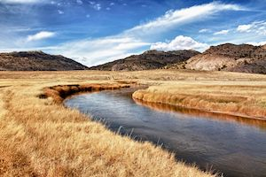

July 13
Martin's Cove
UPDATE: Due to heat and health concerns, the Martin’s Cove personnel will no longer let us hike to the Cove. We have modified the itinerary a little bit to accommodate those concerns.
We will start out the day at Rock Creek Hollow. This is another sacred place where mass graves were buried mainly from the Willie Handcart Company. We will have time to walk past those grave markings and then we will have a presentation in the nearby ampitheatre. This should set the tone for our day.
We will then head on our way to Martin’s Cove and we can stop to have lunch at a nice rest stop on the way. This rest stop is very close to Sixth Crossing where some of us might want to stop to go through the visitor’s center there. Or we can continue directly to Martin’s Cove, where we will be able to spend time at the Martin’s Cove visitor’s center, test out the handcarts, and watch an inspiring film about the handcart companies. We will then head back to Rock Springs where we will gather and have dinner in a park there.
The weather may be hot this time of year. Please bring plenty of water, sunscreen, bug repellant and good walking shoes.
Click here for more information on Martin's Cove.
July 14
The Flaming Gorge

Friday morning on July 14 th we will head down to the Flaming Gorge about one hour south of Rock Springs and Green River. We will meet at Dutch John, Utah where we will get rafts for our group. At the end of the float, there is great shady picnic area for us to eat lunch. We will have hamburgers and hot dogs for lunch in the picnic area. For those who want to float the river, make sure you dress appropriately and bring towels and sunscreen and water.
For those who will not be floating the river, we will do some other exploring also. We may be able to take the dam tour. This has not been open since COVID, but I am hearing that this summer it will re-open. We shall see. If so, hopefully the dam guide will take us down the dam elevator to see the dam fish and the dam turbines. In the gift shop, you can get yourself a dam shirt or a dam hat if you desire. Click here for more information on the Flaming Gorge.
We will then head over to Red Canyon and check out some of the most beautiful vistas that rivals anything you have ever seen. Click here for more information on Red Canyon.
Finally, we will head back to Green River and have dinner at a local park, and reminisce with those who may be joining the group at this point. We will be partying into the night.
July 15
Expedition Island
The main event will start bright and early. We have reserved a nice building on the Island that can accommodate all of us. Expedition Island is a small little island in the middle of the town of Green River. It is a park and a great place to gather. We will be able to do all kinds of activities for all ages. A splash park for the kids, or horseshoes for the old men. A ballpark where we can play kickball or softball, or go on a walk along the river and historic bridges. There are calm areas in the river around the island where the kids and adults alike can have fun in the water. Bring your favorite water toys to play in the river. (No motorized water toys allowed here)
All kinds of photo opportunities for family pictures etc. In the main building, we will be having breakfast and lunch and we have all kinds of fun activities planned for the family. We have the building reserved from 7am until 3pm, but we can spend more time in the park area if so desired.
Click here for more information on the island.